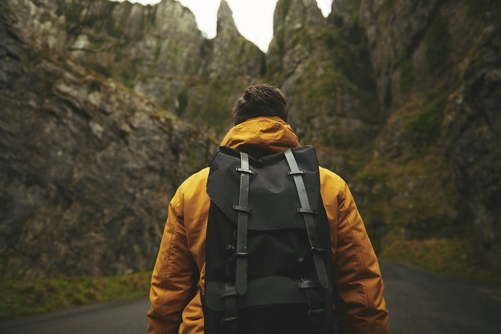

Подорожі — це найкраще, що може з вами трапитись в житті.
Якщо ви, звичайно, любите подорожувати, а не лише відпочивати закордоном. Бо подорожі — це пригоди, а не відпочинок; інколи після них почуваєшся втомленим, але таким щасливим… Адже що може бути краще, ніж відчути себе справжнім мандрівником, старатись провести день в іншому місті як місцевий. Коли ти не женешся за туристичними атракціями, і замість того, щоб стояти в черзі 3 години на Ейфелеву вежу, вирішуєш продовжити двадцятикілометрову пішу прогулянку містом; стараєшся заходити в красиві вулички, роздивлятись вітрини магазинів та кафе, спостерігати як обідають місцеві, по традиції вранці випити каву з круасаном чи провести пікнік літнім вечером з видом на Ейфелеву вежу (а не з неї, нагадую про ціну і великі черги, коли недалеко є Інститут арабського світу з безкоштовною панорамою на місто (і ти як справжній мандріник, який годинами досліджував напрямок подорожі, точно маєш це знати)). Одні люди подорожують для того, щоб втекти від буденності, інші — щоб відпочити від знайомих та роботи. Я подорожую для того, щоб пізнавати світ.
Озирніться навколо: щодня ви бачите ті ж самі речі, щодня вас оточують ті самі люди. Вам дуже пощастило, якщо вам подобається ваш звичний режим життя! Інколи так хочеться покинути все і відволіктись.
Хочете подорожувати? То що ж Вас зупиняє?! Просто зараз сядьте, візьмість в руки папір та олівець, напишіть місця, куди хочете поїхати і те, чому не робите цього. Невже ці причини такі важливі і їх неможливо виправити? Досить відкладати свої мрії на потім — пора втілювати їх в життя. Ти паче, коли зараз для мандрівників є стільки можливостей для подорожей.
Що ж надихає мене подорожувати? Тут все просто: в мене є 3 основних пункти, те, через що я обожнюю мандри.
1. Можливість щодня відкривати для себе світ, щось нове.
Кожної секунди, коли Ви подорожуєте Ви отримаєте масу нової інформації, нових вражень і емоцій. Не забувайте, що за один день в подорожі ви можете навчитись більше, ніж за 10 років життя дома.
2. Можливість знайомитись з новими людьми.
Я б сказала, можливість знайомитись з добрими, хорошими людьми. Повірте, випадкова зустріч з людиною може кардинально змінити Ваше життя.
3.Можливість бути собою.
Коли Ви потрапляєте в чуже середовище, де немає нікого з знайомих, де ви можете побувати вперше і востаннє, Ви просто починаєте бути собою. Не таким, яким хочуть бачити вас ваші знайомі не таким, якими хочуть бачити вас ваші співробітники\друзі/родичі. Ви скидаєте всі маски, які одягаєте щоденно, розслабляєтесь і просто стаєте таким, яким хочете бути саме Ви. Ця фішка, мабуть, найкраще, що ви відчуваєте подорожуючи.
Багатьох зупиняє думка про гроші. Більшість подорожувати дорого — але це повна маячня. Подорожувати можна взагалі безкоштовно, просто цього потрібно реально захотіти. Якщо хочете знати як це, можете звернутись до мене я зрадістю вам поможу. Контактна інформація та багато корисних статтей є на сайті.
«Існує достатньо світла для тих, хто хоче бачити, і достатньо темряви для тих, хто не бажає» — Блез Паскаль
Моя Вам порада: дослухайтесь до своїх бажання, робіть те що хочете і просто будьте собою. Життя дано для того, щоб відкривати світ. Тому починайте робити це вже зараз!